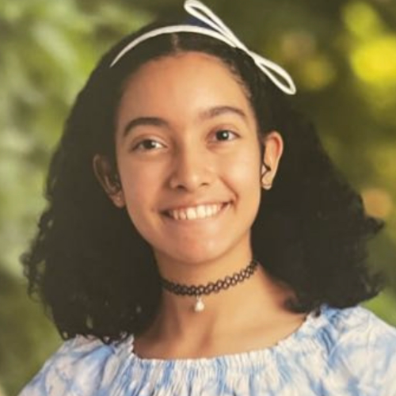

Adriana Zambrano
Tech Enthusiast and Musician
Technical Experience
STEM·E Youth Career Development Program
Interned at STEM·E, a non-profit organization that provides virtual and in-person STEM education to kids and teens, through their unpaid internship program for students.
Website Team Lead (2022 - 2024)
In charge of updating the STEM·E website for the monthly magazine and training new Website Managers by teaching them how to navigate and utilize website tools, such as Wix and Google Ads.
Programming Team Lead (2022 - 2023)
Designed and developed an educational game app designed to teach finance, engineering, physics, and mathematics through car racing.
Data Analytics Team Lead (2022 - 2023)
Analyzed, interpreted, and presented data from the STEM·E website and social media accounts.
Kode With Klossy
Selected to participate in KWK camps, free 2-week coding-intensive virtual summer programs for students of traditionally underrepresented genders in STEM fields.
Musical Journey
El Sistema Texas (2023 - Present)
Performing as the first chair violist in the Youth Chamber Orchestra of El Sistema Texas, a nonprofit dedicated to providing accessible music education inspired by Venezuela's El Sistema. Conducting rehearsals and sectionals of the Preparatory Overture Orchestra as a Volunteer Teaching Artist.